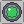
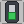
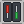
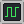
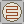
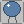
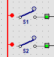

Invoeronderdelen zijn het begin van elke schakeling: met een schakelaar, een drukknop of een sensor
bepaal je of er een signaal (aan = 1, uit = 0) naar de rest van de schakeling gaat. Je bedient ze met de muis.
Een schakelaar, drukknop of impulsgenerator zet je tussen de + rail en de ingang: een draad
van de + rail naar de linkse klem en een draad van de rechtse klem naar de ingang.
Bij de dipschakelaar gaat de linkse klem naar de + rail en gaan de uitgangen 8, 4, 2 en 1 naar de ingangen.
Een LDR of NTC krijgt er een weerstand bij: de + rail naar de sensor, de sensor naar de weerstand en
de weerstand naar de − rail. Het signaal neem je van de klem tussen de sensor en de weerstand, zoals in het
Beslissingspaneel. Zonder die weerstand blijft het signaal een 1, hoe je de
schuifknop ook zet.
Vanaf 2 V is het signaal een 1. Zo zie je dat het signaal energie is die van de bron komt.
Oudere panelen: de drukknop, de schakelaar, de dipschakelaar, de impulsgenerator, de
licht- en de warmtesensor hieronder hebben geen klemmen, maar een uitgang aan de
rechterkant. Ze staan niet meer in de onderdelenbalk, maar werken nog gewoon in oudere panelen. Staan er
voedingsrails op zo’n paneel, dan moeten ze aan een + rail hangen: rechts van de rail
ingeplugd, of met een voedingsdraad. De spanning
van die rail bepaalt of ze een signaal kunnen geven (vanaf 2 V). De eindschakelaar
onderaan deze pagina is geen oud onderdeel: hij hoort bij modellen zoals de persoon en het wagentje.

Drukknop
De uitgang is aan zolang je de knop met de muis ingedrukt houdt. Laat je los, dan gaat de uitgang uit.
Gebruik een drukknop voor kortstondige signalen, bijvoorbeeld om een teller één stap te laten tellen.

Schakelaar
Klik op de schakelaar om hem aan of uit te zetten. Hij blijft in die stand tot je opnieuw klikt.

Dipschakelaar
Hiermee geef je een getal in, bijvoorbeeld om het in een geheugenblok
te schrijven.
Zet met de vier kleine schakelaars 8, 4, 2 en 1 het getal klaar
(binair, 0 tot 15). Staan bijvoorbeeld 4 en 1 aan, dan is het getal 5.
Klik op de knop rechtsonder om het getal te versturen. Zolang de knop ingedrukt is,
is de uitgang aan en gaat het getal mee naar het onderdeel aan het einde van de draad.

Impulsgenerator
Geeft regelmatig een puls: de uitgang gaat steeds aan en weer uit, ongeveer om de 0,3 seconde.
Klik op de knop onderaan om de generator te starten; klik er opnieuw op om hem te stoppen.
Het lampje bovenaan knippert mee met de pulsen.
Frequentie: klik met de rechtermuisknop op de generator en kies Frequentie: 0,5 Hz (elke 2 s een puls),
1 Hz, 1,7 Hz (standaard), 2,5 Hz of 5 Hz. De gekozen frequentie staat klein op de generator en wordt
in het paneel bewaard. Je kan ze ook wijzigen terwijl de generator loopt.
Ideaal om een teller automatisch te laten lopen of een lamp te laten knipperen.

Lichtsensor
Simuleert een sensor die op licht reageert. Klik op de sensor om “licht” of
“donker” te kiezen; de uitgang volgt.

Warmtesensor
Simuleert een temperatuursensor. Klik op de sensor om “warm” of “koud”
te kiezen; de uitgang volgt.
Tip: geef invoeronderdelen een duidelijke naam via het rechtsklikmenu
(Wijzig naam), bijvoorbeeld “Deur open”. De naam verschijnt in de hint en in de statusbalk.
Eindschakelaar
Een eindschakelaar meldt waar een persoon of een
wagentje staat. Hij staat in de invoer, zoals bij een echte machine met een PLC: de
machine zelf is uitvoer, haar eindschakelaars zijn ingangen. Hij volgt de persoon of het wagentje op het paneel zonder
draad. Rechts zit zijn uitgang; die verbind je met een ingang van LogicRun.

Twee eindschakelaars aan de + rail. Ze staan open: de persoon is onderweg tussen S1 en S2.
Je plaatst ze met de rechtermuisknop op de persoon of het wagentje: Eindschakelaars plaatsen. Logic zet er
één voor elke stand, onder elkaar links op het paneel. Daarna kan je ze verslepen.
Met de rechtermuisknop op een eindschakelaar kies je welke stand hij volgt: S1 of S2 bij de persoon,
Start, Tel of Finish bij het wagentje.
Dicht en rood: de stand is bereikt en de uitgang is aan. Staat er geen persoon of wagentje op het paneel, dan toont
hij een rode ?.
Op een paneel met rails hangt hij aan de + rail, zoals een schakelaar.